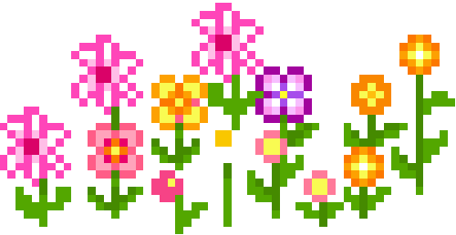

Dorsa Zeinali
Email: Zeinali dot d at northeastern dot edu GitHub: github.com/dorsa-zeinali LinkedIn: Linkedin.com/in/dzeinali
News!
Presented our paper "Learning to Generate Context-Sensitive Backchannel Smiles for Embodied AI Agents with Applications in Mental Health Dialogues" at AAAI 2024 in Vancouver, CN. Presented our work "SPEECH COLLAGE: CODE-SWITCHED AUDIO GENERATION BY COLLAGING MONOLINGUAL CORPORA" at ICASSP 2024 in Seoul, SK
Bio
Hi! My name is Dorsa Zeinali and I am a first year computer science PhD student at Northeastern University and I am advised by professors Varun Mishra and Malihe Alikhani. My interests lie in the intersection of wearable devices and dialogue systems, with the goal of improving mental health and lifestyle interventions to be more personalized and engaging.
Education
Computer Science PhD, Northeastern University, Advisors: Varun Mishra, Malihe Alikhani, Aug 2023-Present BS Carnegie Mellon University, Computer Science, Aug 2019-Dec 2022 Machine learning Concentration
Honors and Awards
Khoury Distinguished Fellowship, Aug 2023-Aug 2024
Publications
Conference Papers
1. Hussein A., Zeinali D., Klejch O., Wiesner M., Yan B., Chowdhury S., Ali A., Watanabe S., Khudanpur S., “Speech Collage: Code-Switched Audio Generation by Collaging Monolingual Corpora,” ICASSP 2024 - 2024 IEEE International Conference on Acoustics, Speech and Signal Processing (ICASSP), Seoul, South Korea

Workshop Papers
1. Bilalpur M., Inan M., Zeinali D., Cohn J.F., Alikhani M. “Learning to Generate Context-Sensitive Backchannel Smiles for Embodied AI Agents with Applications in Mental Health Dialogues” AAAI 2024, ML4CMH, Vancouver, B.C., Canada
Service
RoboNLP workshop 2024 co-located with NAACL 2024 - Reviewer
Research Experience
Undergraduate Researcher, Carnegie Mellon University Feb 2022-Jul 2023 Prof Shinji Watanabe’s WAVLab Speech Recognition Expertise: Independently acquired in-depth knowledge of speech recognition through extensive research. Completed Prof. Shinji Watanabe’s course, "Speech Recognition and Understanding," enhancing foundational understanding. Utilized the ESPnet speech recognition framework to develop and contribute a Bengali speech recognition model to the toolkit on GitHub. Language-Universal Alignments Project: Led the creation of a benchmark and a tool for language-universal alignments. Managed 2TB of audio and transcription data from YouTube in 30 languages. Trained speech recognition models for 15/30 languages with varying datasets, showcasing adaptability. Presented findings at end-of-semester lab presentations, demonstrating effective communication and collaboration skills. JSALT Workshop Project: Continued work from the JSALT workshop, training multiple models on synthetic data for the Chinese/English language pair. Achieved significant performance improvements compared to training solely on monolingual data. Explored various synthetic data types to understand their impact on speech quality and performance. Created additional variations for further experimentation. Collaborated with another participant to research and author a paper, which was successfully accepted at a peer-reviewed venue. JSALT Undergraduate Participant, Johns Hopkins University Jun 2022-Aug 2022 Speech Tech Summer School: Completed a rigorous 2-week summer school in speech and language technology, staying abreast of cutting-edge advancements. Code-Switched Speech Project Leadership: Took the lead on a project targeting improved automatic speech recognition for code- switched speech with limited monolingual training data. Focused on the Chinese/English language pair. Synthetic Data Generation and Implementation: Collaborated and conducted literature review to come up with a method of generation, and implemented an efficient pipeline for generating synthetic audio examples, Communication and Presentation: Effectively communicated project progress weekly to the workshop team. Featured in live-broadcast JSALT 2022 Closing Presentations, showcasing impactful results. Data Science Intern, Behaivior Jun 2021 - Aug 2021 Contributions: Created custom machine learning models to predict opioid cravings from wearable data Created a set of gradient-boosted-tree based classifiers to clean mislabeled data Identified optimal features from timeseries data using a modified Markov Chain Monte Carlo, accounting temporal dependencies Increased performance of classifiers by 5-10% using a combination of hyperparameter tuning, data cleaning, and optimal feature selection Research Assistant, Carnegie Mellon University May 2020 - Sep 2020 Professor LP Morency’s Lab Contributions: Using Python, fine-tuned a Factorized-Multimodal-Transformer to classify didactic interactions between parents and children in order to eventually detect signs of mental illness Used forced-alignment tools to align audio data and their transcripts Extracted features from the transcripts in order to feed into the model Through preparing for the project, obtained valuable knowledge about state-of-the-art Deep Learning methods and models Research Intern, Illinois Institute of Technology Jul 2018 - Sep 2018 Contributions: Using Python, manually classified numerous movie reviews into positive and negative for training First used a Naive-Bayes Classifier on the unlabeled with a given bank of positive and negative words. Later used a CNN model and RNN model to classify the unlabeled data to account for the significance of the order of the words. Research Intern, Northwestern University Jun 2018 - Jul 2018 Contributions: Visited multiple dermatology practices and photographed images of skin cancers. Worked with a post-doc on an image recognition program to detect skin cancers based on image data. Research Intern, George Mason University Jun 2017 - Aug 2017 Contributions: Used Autodesk Maya and Matlab to model extraocular muscles in three dimensions. Worked with a PhD student to develop a model for a biomechanical simulator of strabismus.
Skills
Languages
English: Native Farsi: Native Korean: Upper Intermediate in Speaking, Listening and Reading and Writing Mandarin Chinese: Intermediate in Speaking, Listening and Reading and Writing (HSK 3) French: Upper Intermediate in Speaking, Listening and Reading and Writing Spanish: Novice in Speaking, Listening and Reading and Writing